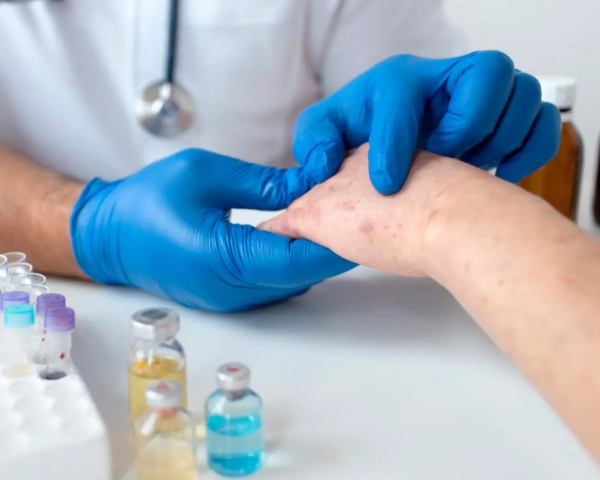
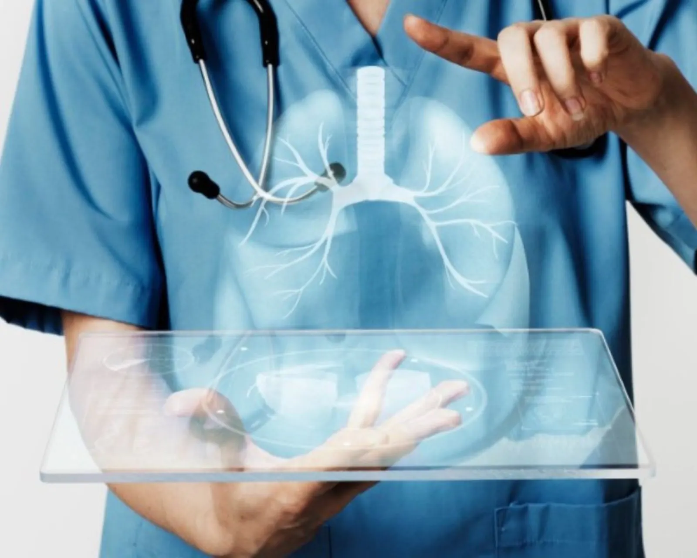

Toutes nos spécialités médicales
17 spécialités médicales et chirurgicales à la Clinique Achifaa Oujda. Cliquez sur une spécialité pour découvrir l'équipe, les pathologies prises en charge et les examens disponibles.
.webp)
Cardiologie
Diagnostic et traitement des maladies du cœur.
Voir la spécialité
Gynécologie & Obstétrique
Suivi de grossesse et santé féminine.
Voir la spécialité
Pédiatrie
Suivi médical complet des enfants et nouveau-nés.
Voir la spécialité
Radiologie & Imagerie médicale
Scanner, IRM, échographie et radiologie conventionnelle.
Voir la spécialité
Chirurgie viscérale & digestive
Chirurgie de l'appareil digestif et abdominal.
Voir la spécialité
Urologie
Pathologies de l'appareil urinaire et génital.
Voir la spécialité
Ophtalmologie
Santé visuelle et chirurgie réfractive.
Voir la spécialité.webp)
ORL & Chirurgie cervico-faciale
Pathologies de l'oreille, du nez et de la gorge.
Voir la spécialité
Traumatologie & Orthopédie
Chirurgie des os, articulations et traumatismes.
Voir la spécialité
Dermatologie
Soins de la peau, allergies et esthétique médicale.
Voir la spécialité
Médecine générale
Consultations généralistes et médecine préventive.
Voir la spécialitéNeurologie
Système nerveux, migraines, AVC, épilepsie.
Voir la spécialité
Gastro-entérologie
Endoscopies, coloscopies et pathologies digestives.
Voir la spécialité
Endocrinologie
Diabète, thyroïde et troubles hormonaux.
Voir la spécialité
Pneumologie
Asthme, BPCO, troubles respiratoires.
Voir la spécialité
Néphrologie
Diagnostic et traitement des maladies rénales.
Voir la spécialitéPsychiatrie
Soutien psychologique et prise en charge globale.
Voir la spécialité